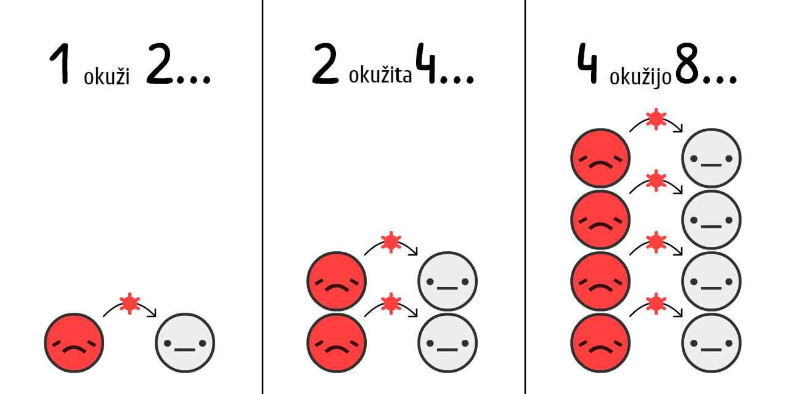

" ุชููุง ฺุฒ ک ุจุงุฏุงุฒุด ุชุฑุณุฏ ุ ุฎูุฏู ุชุฑุณู " ูุตุญุช ุงุญู ูุงูู ุจูุฏ.
ุฏุฑุณุชูุ ุฏุณุชู ุงู ุชูุงูุช احتکار ฺูฉูุฏ- ุงู ุง ุงฺฏู ุณุงุณุชู ุฏุงุฑูุง از ุฎูุฏู ترس ุจุชุฑุณูุฏุ خطر ูุง ูุงูุน ุฑู ฺฉฺฺูฉ ุฌููู ู โุฏู تا ุฌูู ยซูุฑุฌ ู ู ุฑุฌ ูู ฺฏุงูยป ุฑู ุจฺฏุฑู. ترس ู ุดฺฉู ูุณุชุ ู ุดฺฉู ุฑูุด ุจุฑุฎูุฑุฏู ูู با ุชุฑุณโู ููู. ترس ุจู ู ุง ุงูุฑฺ ู โุฏู تا با خطرات دست ู ูพูุฌู ูุฑู ฺฉูู ู ุจุฑุง خطرات ูพุดโุฑู ุขู ุงุฏู ุจุงุดู .
راستش ุฑู ุจุฎูุงุฏุ ูู ูโู ู ุง (ู ุงุฑุณู ฺฉู ูู ูโฺฏุฑุดูุงุณูุ ฺูฉ ฺฉู کدر/ุทุฑุงุญูุ ู ุชู ุชุฑุฌู ู) ฺูฏุฑุงูู . ุงุญุชู ุงู ุฒุงุฏ ุดู ุง ู ุซู ู ุง ฺูฏุฑุงูุฏ! ุฑูุด ุจุฑุฎูุฑุฏ ู ุง با ุชุฑุณโู ูู ک ุดุจูโุณุงุฒ ุจุงุฒโูุงฺฉุจูุฏ, تا ุดู ุง ูู ุจุชููุฏ ุฑูุด ุจุฑุง ุจุฑุฎูุฑุฏ با ุชุฑุณโุชูู در ูพุด ุจฺฏุฑุฏ ฺฉู ุจู ุขฺฏุงู ุจโุงูุฌุงู ู:
- ฺูุฏ ู ุงู ุงุฎุฑ (ู ูุฏู ูโุง بر ูู ูโฺฏุฑโุดูุงุณุ ู ุฏู SEIR ู R ุง R0)
- ฺูุฏ ู ุงู ูพุดโุฑู (ุชุนุทูุ ุฑุฏุงุจ ู ุฎุงุทุจุ ู ุงุณฺฉโูุง)
- ฺูุฏ ุณุงู ุขูุฏู ( از ุจู ุฑูุชู ู ุตููุชุุ ูุงฺฉุณู ูุณุชุ)
ุงู ุฑุงููู ุง (ุณุงุฎุชู ุดุฏู در 12 ุงุฑุฏุจูุดุช 1399ุ ุฑู ุงู ูพุงููุณ ุจุฒูุฏ!โ1) ุจู ูุฌูุฏ ุงูู ุฏู تا ุจู ุดู ุง ترس ู ุงู ุฏ ุจุฏู. ู ุง ุจุฑุง ุงูโฺฉู ุจุชููู ุฑุงู ุจุฑุง شکست COVID-19 ูพุฏุง ฺฉูู ุ ฺฉู ุจุชููู ุณูุงู ุช ุฑูุงู ู ุณูุงู ุช ุงูุชุตุงุฏู ููุฑู ูู ุชุงู ู ฺฉููุ ุจู ุฎูุดโุจู ูุงุฒ ุฏุงุฑู تا ุจุฑูุงู ูโุง ุฏุงุดุชู ุจุงุดู ุ ู ุจู ุจุฏุจู ูุงุฒ ุฏุงุฑู تا ุจุฑูุงู ูโูุง ูพุดุชุจุงู ุฏุงุดุชู ุจุงุดู . ูู ุงูโุฌูุฑ ฺฉู ฺฏูุงุฏุณ ุจุฑุงููู ฺฏูุชู: ยซู ุฎูุดโุจู ููุงูพู ุง ุฑู اختراع ฺฉุฑุฏู ู ู ุจุฏุจู ฺุชุฑ ูุฌุงุช ุฑูยป.
ุฎุจุ ฺฉู ุฑุจูุฏูุงุชูู ุฑู ุจุจูุฏู! ุฏุงุฑู ู ุฑู تا ู ุณุฑ ุชูุงุทู ุฑู ุชุฌุฑุจู ฺฉูู !.

ุฎูุจุงูโูุง از ุดุจูโุณุงุฒ ูพุฑูุงุฒ ุงุณุชูุงุฏู ู โฺฉูู تا ุงุฏ ุจฺฏุฑู ฺู ุฌูุฑ ููุงูพู ุงโุดูู ุณููุท ฺูฉูู!
ูู ูโฺฏุฑุดูุงุณโูุงุ از ุดุจูโุณุงุฒ ูู ูโฺฏุฑ ุงุณุชูุงุฏู ู โฺฉูู تا ฺู ุฌูุฑ ุณููุท ุฌุงู ุนููโ ุจุดุฑ ุฑู ุฑูู ูุฒูู!
ุฎุจุ ุจุงุฏ ุฎู ุฎู ุณุงุฏู ู ยซุดุจูโุณุงุฒ ูพุฑูุงุฒ ูู
ูโฺฏุฑยป ุจุณุงุฒู
! ุชู ุงู ุดุจูโุณุงุฒุ ุงูุฑุงุฏ ู
ุจุชูุง ู
ุณุฑ

ุชุฎู
ู ุฒุฏู ู
โุดู ฺฉู در ุงุจุชุฏุง COVID-19ุ ุจู ุทูุฑ ู
ุงฺูฏูุ ูุฑูุณ از ک
ุงฺฏู ู
ุง ยซูุฑ ۴ ุฑูุฒ ุฏูุจุฑุงุจุฑ ุดุฏูยป ุฑู ุจุฑุง ุฌุงู
ุนูโโุง با ููุท 0.001%
ุฑู "ุดุฑูุน" ุจุฒู تا ุจุชูู ุจุงุฒ ฺฉู. ุฑุงุณุช ู ุชูู بعدش ุชูุธู ุงุช ุฑู ุนูุถ ฺฉู ู ุฏูุจุงุฑู ุจุงุฒ ฺฉู: (ฺุฒุฆุงุช ูู: 3)
ุงู ูู ูุฏุงุฑ رشد ูู ุง ูุณุช. ุขุฑูู ุดุฑูุน ู ุดู ู ูู ู ููุฌุฑ ู โุดู.از ยซุจโุฎุงูุ ููุท ู ุณุฑู ุงุฎูุฑุฏฺฏ ุณุงุฏูโโุงุณยป تا ยซุงูู! ุขุฑูุ ุณุฑู ุงุฎูุฑุฏฺฏ ฺฏูุฑุฏุณุชูโุฌู ุน ุชู ู ุดูุฑ ูพููุฏุงุฑ ุชููุฏ ูู โฺฉูู! ».

ุงู ุงุ ุงู ุดุจูโุณุงุฒ اشتباست. رشد ูู ุงุ ุฎูุดุจุฎุชุงููุ تا ابد ุงุฏุงู ู ูพุฏุง ูู โฺฉูู. ฺุฒ ฺฉู ุฌูู ุดูุน ูุฑูุณ ุฑู ู โฺฏุฑู ุงูู ฺฉู ุงฺฏู ุจูู ูุจูุง ูุฑูุณ ุฑู ฺฏุฑูุชู ุจุงุดู:

ูุฑฺ
ุฎูุจ ุงู ฺูโุฌูุฑ رشد ک ูู ูโฺฏุฑ ุฑู ุชุบุฑ ู โุฏูุ ุจุงู ุจุจูู :
ุงู ู ูุญู «S - ุดฺฉูยป ู ูุญู رشد ูุฌุณุชฺฉ ูุณุชุด.ฺฉู โฺฉู ุดุฑูุน ู โุดูุ ู ููุฌุฑ ู โุดูุ ู ุฏูุจุงุฑู سرعتش ฺฉู ู โุดู.
ุงู
ุง ุงู ุดุจูโุณุงุฒ ูู
โฺูุงู ุงุดุชุจุงูู. ู ูุงูุนุช ุฑู در ูุธุฑ ูู
โฺฏุฑู
ฺฉู ุงูุฑุงุฏ ู
ุจุชูุง
ุจุฑุง ุฑุงุญุชโ ฺฉุงุฑุ ูุฑุถ ฺฉูุฏ ูู
ูู ุงูุฑุงุฏ ู
ุจุชูุง
در ู
ูุฑุฏ COVID-19ุ ุชุฎู
ู ุฒุฏู ู
โุดู ฺฉู ุดู
ุง ุจุฑุง ۱۰ ุฑูุฒ ู
ุจุชูุง
ุงู برعکس رشد ูู ุงูุ ูู ูุฏุงุฑ ุฒูุงู ูู ุง.
ุฎูุจ ุจู ูุธุฑุชูู ฺ ู ุดู ุงฺฏู ุงู ุชูุงุจุน «S-ุดฺฉูยป رشد ู ุฒูุงู ูู ุง ุฑู ูู ุฑุงู ูู โุฏฺฏู ุดุจูโุณุงุฒ ฺฉูู ุ

ุจุงู ุจุฑุฑุณ ฺฉูู .
ูู
ูุฏุงุฑ ูุฑู
ุฒ ู
ูุงุฑุฏ ูุนุงู ูุนู
ูู
ูุฏุงุฑ ุฎุงฺฉุณุชุฑ ุชู
ุงู
ู
ูุงุฑุฏ (ูุนุงู
ู ุงูโุฌุงุณุช ฺฉู ูู ูุฏุงุฑ ู ุดููุฑู ูู ุธุงูุฑ ู โุดู! ุงู ک ู ูุญู ุฒฺูฏูููโุง ูุณุชุ ุญุช ک ู ูุญู ยซฺูฏุงุฑุชู -ูุฑู ุงูยป ูุณุช. ุงุตูุง ุงุณู ูุฏุงุฑู. ูู ุดููุตุฏ ูุฒุงุฑ بار ุฏุฏูุด ู ุงูุชู ุงุณ ู โฺฉูู ฺฉู ุตุงูโุงุด ฺฉูู .
ุงู ู
ุฏู SIR ูุณุชุ5
(ู
ุฎูู
ุงู ุฏูู
ู ุงุตู ู
ูู
در ยซู
ูุฏู
ูโุง بر ูู
ูโฺฏุฑโุดูุงุณยป:

ุชูุฌู: ุดุจูโุณุงุฒโูุง ฺฉู ู ูุฌุฑ ุจู ุณุงุณุชโฺฏุฐุงุฑ ู โุดูุ ุฎู ุฎู ูพฺุฏูโุชุฑ از ุงู ูุณุชูุฏ. ูู ู ุฏู SIR ูู ฺูุงู ู โุชููู ุงูุชูโูุง ุนู ูู ุฑู ุชูุถุญ ุจุฏูุ ุญุช ุงฺฏู ฺูฉุงุช ุธุฑู ุฑู در ูุธุฑ ฺูฏุฑู.
ุงู
ุง ุจุงุฏ ู ุธุฑูโฺฉุงุฑ ุฑู ุงุถุงูู ฺฉูู
: ูุจู از ุงฺูฉู

(ุงู ููุน ุฏฺฏุฑ ู
ุฏูุ ุงุณู
ุด ู
ุฏู SEIR6ูุณุชุดุ ฺฉู "E" ุจู ู
ุนูุง در «در ู
ุนุฑุถยป"Exposed"
ุจุฑุง COVID-19ุ ุชุฎู
ู ุฒุฏู ู
โุดู ุดุฑุงุท ู
ุจุชูุง-ุบุฑ-ู
ุณุฑ
ูู
ูุฏุงุฑ ูุฑู
ุฒ + ุตูุฑุช ู
ูุงุฑุฏ ูุนุงู ูุนุงู(ู
ุจุชูุง
ูู
ูุฏุงุฑ ุฎุงฺฉุณุชุฑ ุชู
ุงู
ู
ูุงุฑุฏ (ู
ูุงุฑุฏ ูุนุงู + ุจูุจูุฏ ุงูุชู
ุชูุงูุช ุฒุงุฏ ุงุฌุงุฏ ูุดุฏ! ู
ุฏุช ุฒู
ุงู ฺฉู ู
ุง در ู
ุนุฑุถ
ุงู ุง ฺุฑุงุ ุจู خاطر ู ูู ุชุฑู ุงุฏู در ยซู ูุฏู ูโุง بر ูู ูโฺฏุฑโุดูุงุณยป:

ฺฉู ู
ุฎูู «عدد ุณุฑุงุชยป "Reproduction number" ูุณุชุด. ุงู عدد ู
ุงฺูฏู تعداد ุงูุฑุงุฏุณุช ฺฉู ک ูุฑุฏ ู
ุจุชูุง
Rدر ุท ุดูุน ک ุจู ุงุฑ ุชุบุฑ ูพุฏุง ู โฺฉููุ ฺูู ู ุตููุช ุจุดุชุฑ ูพุฏุง ู โฺฉูู ู ู ุฏุงุฎูู ุจุดุชุฑ ุงูุฌุงู ู โุฏู .
R0ฺฉู ุจู ุตูุฑุช آر-ูุงุช(R-nought) ุชููุธ ู โุดูุ در ูุงูุน ู ูุฏุงุฑ R ฺููฏุงู ุดุฑูุน ฺฏูุชู ู ุดู. R0ุจุดุชุฑ ูู ุงุงฺูฏุฑ ูุฏุฑุช ุฎูุฏ ูุฑูุณูุ ุงู ุง ูู โฺูุงู ู ู ฺฉูู از جا ุจู جا ุฏฺฏู ูุฑู ฺฉูู. ุจู ุนููุงู ู ุซุงู ุชู ุดูุฑโูุง ฺฉู ุชุฑุงฺฉู ุฌู ุนุช ุจุงูุง ุฏุงุฑูุ R0 ุจุดุชุฑ از ู ูุงุทู ุฑูุณุชุง ูพุฎุดโุดุฏู است.p>
(در ุจุนุถ از ฺฏุฒุงุฑุดโูุง ุฎุจุฑ -ุญุช ุจุนุถ ู ูุงูุงุช ุนูู - R ุฑู با R0 ูุงุท ู โฺฉูู. ู بار ุฏฺฏูุ عبارت ุนูู ูุฒูู ุง ุฎูุจ ูุณุชู!)
ู
ูุฏุงุฑ R0 ุจุฑุง ุขููููุงูุฒุง ูุตู ู
ุดููุฑ ุญุฏูุฏ ۱.۲۸ ูุณุชุด.8. ุงู ุนู در ุดุฑูุนุ ุดูุน ุขููููุงูุฒุงุ ูุฑ ูุฑุฏ
ู ูุฏุงุฑ R0ุจุฑุง COVID-19 برابر 2.2 ุชุฎู ู ุฒุฏู ุดุฏู,9 ุงู ุง ک ู ุทุงูุนูโู ููุง ูุดุฏู ุงู عدد ุฑู در ุดูุฑ ูููุงู ۵.۷(!) ุชุฎู ู ุฒุฏู.10
در ุดุจูโุณุงุฒ ู
ุง - در ุดุฑูุน ู ุจู ุตูุฑุช ู
ุงฺูฏู โ ک
با ุงู ู ุญุงุณุจูโฺฏุฑ R0 ฺฉู ุจุงุฒ ฺฉูุฏุ تا ุจุจูู R0 ฺูโุทูุฑ ุจู ุฒู ุงู ุจูุจูุฏ ู ุงุจุชูุง ุฌุฏุฏ ูุงุจุณุชู است:
ุงู
ุง ุญูุงุณุชูู ุจุงุดูุ ูุฑฺ
ููุช تعداد ฺฉุงู از ู ุฑุฏู ุงู ู ูพุฏุง ฺฉููุ 1>R ุฎูุงูุฏ ุจูุฏุ در ูุชุฌู ูุฑูุณ ู ูุงุฑ ุดุฏู! ุจู ุงูุงู ู ุฌู ุนู โฺฏู. ุจุฑุง ุขููููุงูุฒุงูุง ุฑุงุฌุ ุงู ู ุฌู ุน از ุทุฑู ูุงฺฉุณู ู ุณุฑ ู โุดู. ุงู ฺฉู ุจุฏูู ฺู ฺฉูุชุฑู ุงุฌุงุฒู ุจุฏู ู ุฑุฏู ยซุงู ู ุฌู ุน ุทุจุนยป ูพุฏุง ฺฉูู ู ุงุฏูู ูุญุดุชูุงฺฉู. (ุงู ุง ูู ุจู ุฏูู ฺฉู ฺูฉุฑ ู โฺฉูุฏุ بعدا ุชูุถุญ ุฎูุงูู داد.)
ุงูุง ุจุงุฏ ฺูฏุงู ุฏูุจุงุฑู ุจู ู ุฏู SEIR ุจูุฏุงุฒู ุ ูู R ู R0در ุท ุฒู ุงู ู ู ุฑุฒ ุงู ู ุฌู ุน ุฑู ูู ุจุจูู :
ุชูุฌู: ู ุฌู ูุน ู ูุงุฑุฏ در ุงู ู ุฌู ุน ู ุชููู ูู ุดูุ ุจฺูฉู از حدش ุจุงูุง ู โุฒูู! ุจุงูุงุชุฑ ุฑูุชู از حد ูู ุฏููุง ุฒู ุงู رخ ู โุฏู ฺฉู ู ูุงุฑุฏ ูุนู ุจู ุงูุฌ ุฑุณุฏู. (ุงู ู ูุถูุน ุจุฏูู ุชูุฌู ุจู ุงูโฺฉู ุชูุธู ุงุช ุฑู ฺู ุฌูุฑ ุชุบุฑ ุจุฏุฏ ูู ุดู رخ ู โุฏู - ุฎูุฏุชูู ุงู ุชุญุงูุด ฺฉูุฏ.)
ุงู ุจู خاطر ุงูู ฺฉู ููุช تعداد ุบุฑ-
ุงฺฏู ููุท ک درس از ุงู ุฑุงููู ุง ู โุฎูุงุฏ ูู ุฑุงู ุฎูุฏุชูู ุฏุงุดุชู ุจุงุดุฏุุงู ุนฺฉุณู. ุงู ูู ูุฏุงุฑ ู ู ฺฉูู ูพฺุฏู ุจู ูุธุฑ ุจุงุฏุ پس ู ฺฉู ููุช ุจุฐุงุฑุฏ تا ฺฉุงู ู ู ุชูุฌูโุงุด ุจุดุฏ:

ุนู: ูุงุฒ ูุณุช ฺฉู ูู ููโ ูุงููโูุง ุฑู ุดูุงุณุง ฺฉูู ุ ุง ุญุช ุชูุฑุจุง ูู ูโุดูู ุฑูุ تا ุฌูู ฺฉููุฏ-۱۹ ุฑู ุจฺฏุฑู !
ุจู ูุธุฑ ู ุชูุงูุถ ู ุงุฏ. ฺฉููุฏ-۱۹ ุจู شدت ู ุณุฑูุ با ุงู ุญุงู ุจุฑุง ู ูุงุฑุดุ ู ุง ยซููุทยป ูุงุฒ ุจู ฺฉูุชุฑู ุจุด از ۶۰٪ ู ุจุชูุงูุง ุฏุงุฑู . ۶۰٪ ุ! ุงฺฏู ุงู ูู ุฑู ู ุฏุฑุณู ุจูุฏุ ุนู ۱۲! ุงู ุง ุงฺฏู 2.5=R0 ุจุงุดูุ ฺฉุงูุด ถฑูชโุงุด ู ุง ุฑู ุจู R=0.975 ู โุฑุณูููุ در ูุชุฌู 1>Rุ ู ูุฑูุณ ู ูุงุฑ ุดุฏู!(ูุฑู ูู ุฏูู: 12)

(اگر ฺูฉุฑ ู ฺฉูุฏ R0 ุง ุณุงุฑ ู ุชุบุฑูุง ุชู ุดุจูโุณุงุฒโูุง ู ุง ุฎู ฺฉู /ุฒุงุฏ ูุณุชูุ ุฎูุดุญุงูู ฺฉู ูพุดโูุฑุถโูุง ู ุง ุฑู ู ูุฑุฏ ฺุงูุด ูุฑุงุฑ ู โุฏุฏ. ک ุญุงูุช ยซุดูโุจุงุฒยป در ูพุงุงู ุงู ุฑุงููู ุง ูุฌูุฏ ุฏุงุฑู ฺฉู ู โุชููุฏ اعداد ุฏูุฎูุงู ุฎูุฏุชูู ุฑู ุฏุงุฎูุด ูุงุฑุฏ ฺฉูุฏ ู ุญุงูุชโูุง ู ุฎุชูู ุฑู ุดุจูโุณุงุฒ ฺฉูุฏ.)
ูุฑ ู ุฏุงุฎููโุง ุฏุฑุจุงุฑูู ฺฉููุฏ-۱۹ ฺฉู تا ุญุงูุง ุดูุฏุฏ - ุดุณุชู ุฏุณุชโูุงุ ูุงุตููโฺฏุฐุงุฑ ูุฒฺฉ/ุงุฌุชู ุงุนุ ุชุนุทูโูุง ุนู ูู ู ุดุฎุตุ ุฑุฏุงุจ ู ุฎุงุทุจุงูุ ูพูุดุฏู ู ุงุณฺฉ ู ุญุช ยซุงู ู ุฌู ุนยป- ูู ู ู کار ุฑู ุงูุฌุงู ู โุฏู:
ุฑุณููุฏู 1>R.
ุฎูุจุ ุจุงุฏ از ยซุดุจูโุณุงุฒ ูพุฑูุงุฒ ูู ูโฺฏุฑยปโู ูู ุงุณุชูุงุฏู ฺฉูู تا ุจููู ู :ฺูโ ุฑุงู ูุฌูุฏ ุฏุงุฑู ฺฉู ุจู 1>R ุจุฑุณู ู ูู ุฒู ุงู ุณูุงู ุช ุฑูุงู ู ุงูุชุตุงุฏู ูู ุฑู ุญูุธ ฺฉูู ุ
ุฎูุฏุชูู ุฑู ุขู ุงุฏูู ک ูุฑูุฏ ุงุถุทุฑุงุฑ ฺฉูุฏโฆ.
โฆ ู โุชููุณุช بدتر ุจุงุดู. ุงู ุฌูุงู ู ูุงุฒโุง ฺฉู ازش ูพุดโฺฏุฑ ฺฉุฑุฏู .
ุณูุงุฑู ۰: ู ุทููุง ฺู کار ูู โฺฉุฑุฏู
ุชูุฑุจุง ۱ ููุฑ از ูุฑ ۲۰ ููุฑ ุจู ุงุฑ ู ุจุชูุง ุจู ฺฉููุฏ-۱۹ ูุงุฒ ุจู ุฑูุชู ุจู ICU (بخش ู ุฑุงูุจุชโูุง ฺูู) ูพุฏุง ู โฺฉูู.13 در ฺฉุดูุฑูุง ุซุฑูุชู ูุฏ ู ุซู ุงุงูุงุช ู ุชุญุฏูู ุขู ุฑฺฉุงุ ۱ تخت ICU ุจู ุงุฒุง ูุฑ ۳۴۰۰ ููุฑ ูุณุช.14 در ูุชุฌู ุชู ุขู ุฑฺฉุง ู โุดู ุจู ุงุฑ ۲۰ ููุฑ از ูุฑ ۳۴۰۰ ููุฑ ุฑู ุจู ุตูุฑุช ูู โุฒู ุงู ุชุญู ู کرد - ุญุฏูุฏ ۰.۶٪ ุฌู ุนุช.
ุญุช ุงฺฏู ุธุฑูุช ู ุฑุงูุจุชโูุง ฺูู ุฑู ุจุด از ุณู برابر ู ุจู ุญุฏูุฏ ۲٪ درصد ูู ุจุฑุณููู ุ ุงู ุงุชูุงูู ฺฉู ู โุงููุชู ุงฺฏู ู ุทููุง ฺู کار ุงูุฌุงู ูุฏู :
ุฎูุจ ูุณุช.
ุงู ูู ูู ฺุฒู ฺฉู ุชุญูู ۱۶ ู ุงุฑุณ ุงู ูพุฑุงู ฺฉุงูุฌ ููุฏู ฺฉุดู کرد: ฺู کار ฺูฉูุฏุ ุงููโููุช ุชุฎุชโูุง ICUู ูู ุชู ูู ู โุดู ู ุจุด از ۸۰٪ ู ุฑุฏู ู ุจุชูุง ุจู ุจู ุงุฑ ู โุดู. ( ุงุฏู ูู ุจุงุดู: ู ุฌู ูุน ู ูุงุฑุฏ از سطح ุงู ู ุฌู ุน ูุฑุงุชุฑ ู โุฑู.)
ุญุช ุงฺฏู ۰.۵٪ درصد ุงูุฑุงุฏ ู ุจุชูุง ููุช ฺฉูู ۱۵- ูุฑุถ ุณุฎุงูุชู ูุฏุงูู ููุช ICUโุง در کار ูุณุช- در ฺฉุดูุฑูุง ุจุฒุฑฺฏ ู ุงููุฏ ุงุงูุงุช ู ุชุญุฏูุ با ۳۰۰ ู ููู ุฌู ุนุชุ ۰.۵٪ از ۸۰٪ ۳۰۰ ู ููู = ۱.۲ ู ููู ููุช ฺฉุฑุฏูโฆ ุงฺฏู ฺู کار ฺูฉูู .
(ุฎู از ฺฏุฒุงุฑุดโูุง ุฎุจุฑ ู ูพุณุชโูุง ุดุจฺฉูโูุง ุงุฌุชู ุงุน ู โฺฏู «۸۰٪ ู ุจุชูุง ู โุดูยป ุจุฏูู ุงฺูฉู ุจฺฏู ยซุงฺฏู ฺูโ کار ฺูฉูู ». ترس ูุงุณุทูโุง ุจุฑุง ฺฉฺูฉ ฺฏุฑูุชู ุจุดุชุฑ ูุฑุงุฑ ฺฏุฑูุชูุ ูู ادراک. ูุน)
ุณูุงุฑู ۱: ุตุงู ฺฉุฑุฏู ูู ูุฏุงุฑ/ุงู ู ุฌู ุน
ุจุฑูุงู ูู ยซูู ูุฏุงุฑ ุฑู ุตุงู ฺฉูู » ุชูุณุท ูู ูู ุงุฑฺฏุงูโูุง ุณูุงู ุช ุนู ูู در ุญุงู ุชุจูุบ ุจูุฏุ در ุนู ุญุงู ฺฉู ุจุฑูุงู ูู ุงุจุชุฏุง ุจุฑุชุงูุงุ ยซุงู ู ุฌู ุนยป ุจู ุตูุฑุช ูู ฺฏุงู ู ูุฑุฏ ุชู ุณุฎุฑ ูุงูุน ู โุดุฏ. ุงู ุฏู ุจุฑูุงู ู ک ูุณุชู. ุจุฑุชุงูุง ููุท ุจู ุตูุฑุช ุถุนู ุงุนูุงู โุงุด کرد.15
با ุงู ูุฌูุฏุ ูุฑ ุฏู ุจุฑูุงู ู ููุต ู ฺููฉ ุฏุงุดุชูุฏ.
ุจุงุฏ ุงูู ุจู ุฏู ุฑูุด ุงุตู ฺฉู ุจุฑุง ยซุตุงู ฺฉุฑุฏู ูู ูุฏุงุฑยป ูุฌูุฏ داشت ฺูฏุงู ุจูุฏุงุฒู : ุดุณุชู ุฏุณุชโูุง ู ูุงุตููโฺฏุฐุงุฑ ูุฒฺฉ.
ุดุณุชู ุจุดุชุฑ ุฏุณุชโูุง در ฺฉุดูุฑูุง با ุฏุฑุขู ุฏ ุจุงูุง ุณุฑู ุงุฎูุฑุฏฺฏ ู ุขููููุงูุฒุง ุฑู ุญุฏูุฏ ۲۵٪ ฺฉุงูุด ู โุฏู16ุ ู ุชุนุทู ุนู ูู در سطح ุดูุฑ ููุฏู ارتباط ูุฒุฏฺฉ ุฑู ุญุฏูุฏ ۷۰٪ درصد ฺฉุงูุด ุฏุงุฏู. 17. ุฎูุจ پس ุจุงุฏ ูุฑุถ ฺฉูู ฺฉู ุดุณุชู ุฏุณุชโูุง ู โุชููู R ุฑู تا ۲۵٪ ฺฉุงูุด ุจุฏูุ ู ูุงุตููโฺฏุฐุงุฑ ู โุชููู R ุฑู تا ۷۰٪ ฺฉุงูุด ุจุฏู:
ุจุงุฏ با ู
ุญุงุณุจูโฺฏุฑ ุฒุฑ ุจุจูู
ฺฉู % ุบุฑ-
ุญุงูุงุ ุจุงุฏ ุจุจูู ฺู ุงุชูุงู ุจุฑุง ฺฉููุฏ-۱۹ رخ ู โุฏูุ ุงฺฏู با ุดุฑูุน از ู ุงุฑุณ ฒฐฒฐุ ุดุณุชู ุฏุณุชโูุง ุฑู ุงูุฒุงุด ุจุฏู ู ูุงุตููโฺฏุฐุงุฑ ู ุนุชุฏู ุฑู در ูพุด ุจฺฏุฑู - ฺฉู R ฺฉุงูุด ูพุฏุง ฺฉููุ ุงู ุง ูู โฺูุงู ุจุงูุง ۱ ุฎูุงูุฏ ุจูุฏ:
ุณู ฺูฉุชู:
ุงู ฺฉุงุฑูุง ู ุฌู ูุน ู ูุงุฑุฏ ุฑู ฺฉุงูุด ุญุช ุงฺฏู 1>R ูุดูุ ฺฉุงูุด R باعث ูุฌุงุช ุฌูู ุงูุณุงูโูุง ู โุดูุ ฺูู ยซุจุงูุงุชุฑ ุฑูุชูยป از حد ุงู ู ุฌู ุน ุฑู ฺฉู โุชุฑ ู โฺฉูู. ุฎู از ู ุฑุฏู ฺูฉุฑ ู โฺฉูู ยซุตุงูโ ฺฉุฑุฏู ูู ูุฏุงุฑยป ู ูุงุฑุฏ ุงุจุชูุง ุฑู در ุท ุฒู ุงู پخش ู โฺฉูู ุงู ุง ู ุฌู ูุน ุฑู ฺฉุงูุด ูู โุฏู. ุงู ูพุดโูุฑุถ بر اساس ูุฑ ู ุฏู ูู ูโฺฏุฑุดูุงุณ ุบุฑู ู ฺฉูู. ฺูู ฺฏุฒุงุฑุดโูุง ุฎุจุฑ ยซุงุจุชูุง ุจุด از ۸۰٪ ู ุฑุฏู ุฑูยป ุงุฌุชูุงุจโูุงูพุฐุฑ ู โุฏููุณุชูุ ู ุฑุฏู ฺูฉุฑ ู โฺฉุฑุฏู در ูุฑ ุตูุฑุช ุงู ุงุชูุงู ู โุงููุชู. ูุน.
ุจู خاطر ู ุฏุงุฎููโูุง ุงุถุงูุ ุงูุฌ ุดูุน ูพุด از ุฑุณุฏู ุจู ุงู ู ุฌู ุน ุฎูุงูุฏ ุจูุฏ. در ูุงูุนุ در ุงู ุดุจูโุณุงุฒุ ู ุฌู ูุน ู ูุงุฑุฏ ุงุจุชูุง ุฎู ฺฉู ูุฑุงุชุฑ از حد ุงู ู ุฌู ุน ุฎูุงูุฏ ุฑูุช - ุจุฑูุงู ูู ุจุฑุชุงูุง! ููุช ฺฉู 1>R ุดุฏุ ู โุชููุฏ ุจโุฎุงู ุจูู ู ุฏุงุฎูุงุช ุจุดุฏุ ู ฺฉููุฏ-۱۹ ู ูุงุฑ ุดุฏู ุฎูุงูุฏ ุจูุฏ. ููุ ุจู جز ک ู ุดฺฉูโฆ
ู ุง ูููุฒ ุฏฺุงุฑ ฺฉู ุจูุฏ ICU ู โุดู . ุจุฑุง ฺูุฏู ู ุงู. (ุญูุงุณู ูู ุจุงุดู ฺฉู ู ุง ุจุฑุง ุงู ุดุจูโุณุงุฒโูุง ูุฑุถ ฺฉุฑุฏู ุจูุฏู تعداد ICU ูุง ุณู برابر حد ูุนู ูุณุชุด.)
ุงู ุงูุชูโู ุฏฺฏูู ุชุญูู ۱۶ ู ุงุฑุณ ุงู ูพุฑุงู ฺฉุงูุฌ ุจูุฏุ ฺฉู ุจุฑุชุงูุง ุฑู ูุงูุน کرد ุจุฑูุงู ูโู ูุจูโุงุด ุฑู ูุบู ฺฉูู. ูุฑ ุงูุฏุงู ุจุฑุง ูุฑููุดุงู ( ฺฉุงูุด Rุ ุงู ุง ูู โฺูุงู ูุฌูุฏ R>1) شکست ุฎูุงูุฏ ุฎูุฑุฏ. ุฌฺููฏุฑ ( ฺฉุงูุด R ุจู حد ฺฉู 1>R ุจุฑุณู) ุฎูุงูุฏ ุจูุฏ.

ุงู ุฏฺฏู ยซุตุงู ฺฉุฑุฏูยป ูู ูุฏุงุฑ ูุฎูุงูุฏ ุจูุฏุ ููโฺฉุฑุฏู ูู ูุฏุงุฑู. ุจุฑุง ู ุซุงูุ با ุฏุงุดุชู ฺฉโฆ
ุณูุงุฑู ۲: ุชุนุทู ุงุฌุจุงุฑ ฺูุฏ ู ุงูู
ุจุงุฏ ุจุจูู
ฺู ุงุชูุงู ุฎูุงูุฏ ุงูุชุงุฏ ููุช با ک ุชุนุทู ۵ ู
ุงูู ูู
ูุฏุงุฑ ุฑู ููโฺฉูู
ุ تعداد
ุงูู.
ุงู ยซู
ูุฌ ุฏูู
ูยป ฺฉู ูู
ู در ู
ูุฑุฏุด صحبت ู
โฺฉูู. ุจู ู
ุญุถ ุงูโฺฉู ุชุนุทูโูุง ุฑู ุจุฑุฏุงุฑู
ุ ุฏูุจุงุฑู ุจู R>1 ุฎูุงูู
ุฑุณุฏ. ุนูุ با ک
ุชุนุทู ุงุฌุจุงุฑ ุฏุฑู ุงู ูุณุชุ ููุท ูุฑุตุช ุจุฑุง ู ุดุฑูุน ู ุฌุฏุฏู.
ุฎูุจุ ฺ ู โุดู ุงฺฏู ุฏูุฑูโูุง ุชุนุทู ู ุชูุงูุจ ุฏุงุดุชู ุจุงุดู ุ ุฏูุจุงุฑู ู ุฏูุจุงุฑู.
ุณูุงุฑู ۳: ุชุนุทูโูุง ู ุชูุงูุจ
ุงู ุฑุงู ุญู ุจุฑุง ุงููู بار ุชูุณุท ุชุญูู ۱۶ ู ุงุฑุณ ุงู ูพุฑุงู ฺฉุงูุฌ ูพุดููุงุฏ ุดุฏู ุจูุฏุ ู بعدا ุชูุณุท ู ูุงููโุง از ูุงุฑูุงุฑุฏ تکرار شد. 19
ุจุงุฏ ک ุดุจูโุณุงุฒ ุฑู ุจุฑุฑุณ ฺฉูู : (بعد از ک ุฏูุฑ اجرا ยซุณูุงุฑู ضبط ุดุฏูยปุ ุดู ุง ู โุชููุฏ ุจุฑูุงู ูู ุชุนุทู ุฎูุฏุชูู ุฑู ุดุจูโุณุงุฒ ฺฉูุฏ. ุจุฑุง ุงู کار ููุงุฑูุง ุฑู ููุช ุดุจูโุณุงุฒ در ุญุงู اجراست ุชุบุฑ ุจุฏุฏ. ุญูุงุณุชูู ุจุงุดู ู โุชููุฏ ุดุจูโุณุงุฒ ุฑู ู ุชููู ู ุฏูุจุงุฑู اجرا ฺฉูุฏ ู ูู โฺูู سرعت ุดุจูโุณุงุฒ ุฑู ุชุบุฑ ุจุฏุฏ.)
ุงู ุฑูุด ู ูุงุฑุฏ ุงุจุชูุง ุฑู ุฒุฑ ุธุฑูุช ICU ู ูุฌูุฏ ู ุงุฑู! ู ุฎู ุจูุชุฑ از ۱۸ ู ุงู ุชุนุทู ูุจู از در دسترس ูุฑุงุฑ ฺฏุฑูุชู ูุงฺฉุณูู. ููุท ฺฉุงูู... ฺูุฏู ู ุงู ูู ู جا ุฑู ุจุจูุฏู ุ ุฏูุจุงุฑู ุจุฑุง ฺูุฏ ู ุงู ุจุงุฒุดูู ฺฉูู ู ุงู ูุฑุงูุฏ ุฑู تا جا ุงุฏุงู ู ุจุฏู ฺฉู ูุงฺฉุณู در دسترس ุจุงุดู.( ู ุงฺฏู ูุงฺฉุณู ูพุฏุง ูุดุฏุ ุงู کار ุฑู ุงูโูุฏุฑ تکرار ฺฉูู تا ุงู ู ุฌู ุน ูพุฏุง ฺฉูู โฆ. در ۲۰۲۲.)
ุจุจูุฏุ ุฏุฑุณุชู ฺฉู ک خط ุจุฑุง ยซุธุฑูุช ICU» ุจฺฉุดู ู بر اساس ุงูู ุนู ู ฺฉูู ุ ุงู ุง ฺฉู ฺุฒ ู ูู ุฏฺฏู ูู ูุณุช ฺฉู ู ุง ูู โุชููู ุงูโุฌุง ุดุจูโุณุงุฒโุดูู ฺฉูู . ู ุซู:
ุณูุงู ุช ุฑูุงู: ุชููุง ک از ุจุฒุฑฺฏโุชุฑู ุนูุงู ู خطر ุงุฌุงุฏ ุงูุณุฑุฏฺฏุ اضطراب ู ุฎูุฏฺฉุดู. ูู โฺูู ู โุชููู ุงูุฏุงฺูู ฺฉุดุฏู ۱۵ ุณฺฏุงุฑ در ุฑูุฒ خطر ู ุฑฺฏ ุฒูุฏุฑุณ ุฑู ุงูุฒุงุด ุจุฏู.20
ุณูุงู ุช ุงูุชุตุงุฏ: ุชู ุงู ุดุฑุงุท ฺฏูุชู ุงฺูฉู ยซุงูุชุตุงุฏ پس ฺุยป ุงู ุฑู ุชุฏุงุน ู โฺฉูู ฺฉู ูุงุจุฏ ุจุดุชุฑ ูพูู ุงูู ุช ุฏุงุฑู تا ุฌูู ุงูุณุงูโูุงุ ุงู ุง ยซุงูุชุตุงุฏยป ููุท ุฎุฑุฏ ู ูุฑูุด ูุณุช: ุงูู ฺฉู ู ุฑุฏู ุจุชููู ุจุฑุง ุนุฒุฒุงูโุดูู غذا ู ุณุฑูพูุงู ูุฑุงูู ฺฉููุ ุจุฑุง ุขูุฏู ูุฑุฒูุฏุดูู ุณุฑู ุงูโฺฏุฐุงุฑ ฺฉูู ู از غذا ู ููุฑ ูุฐุช ุจุจุฑู = ฺุฒูุง ฺฉู ุฒูุฏฺฏ ุฑู ุจุฑุง ุฒูุฏฺฏโฺฉุฑุฏู ุงุฑุฒุดู ูุฏ ู โฺฉูู. جدا از ุงู ู ูุงุฑุฏุ ููุฑ ุฎูุฏุด ک از ุนูุงู ู ฺฉู ุชุงุซุฑุงุช ูุญุดุชูุงฺฉ ุฑู ุณูุงู ุช ุฌุณู ุงู ู ุฑูุงู ู โุฐุงุฑู.
ูู โฺฏู ฺฉู ูุจุงุฏ ุชุนุทูโูุง ุฑู در ุตูุฑุช ูุงุฒ ุฏูุจุงุฑู ุงุนู ุงู ฺฉูู ! ุงุณุชูุงุฏู از ุชุนุทูโูุง ุจู ุนููุงู ยซูุทุนโฺฉููุฏูู ู ุฏุงุฑยป ุฑู بعدا ุจุฑุฑุณ ู โฺฉูู . ุงู ุง با ุงู ุดุฑุงุท ุงุฏูโุขู ูุณุช.
صبر ฺฉูุฏโฆ ุชุงูุงู ู ฺฉุฑูโุฌููุจ ูู ู ุญุงูุง ูู ฺฉููุฏ-۱۹ ุฑู ู ูุงุฑ ฺูฉุฑุฏูุ در ุท ۴ ู ุงูุ ุจุฏูู ุชุนุทูโูุง ุงุฌุจุงุฑ ุจููุฏ ู ุฏุชุ
ฺู ุฌูุฑุ
ุณูุงุฑู ۴: ุขุฒู ุงุดุ ุฑุฏุงุจุ ูุฑูุทูู
ยซุญุชู ุง! ู ุง *ู โุชููุณุชู * کار ฺฉู ฺฉุฑูโุฌููุจ در ุดุฑูุน ุดูุน ฺฉุฑุฏู ุฑู ุจฺฉูู ุ ูู ุงูุงู ุฎู ุฏุฑู. ู ุง ุงูู ูุฑุตุช ุฑู از دست ุฏุงุฏู .»
ุงู ุง ู ูุถูุน ุฏููุง ูู ูู! ยซุชุนุทู ุงุฌุจุงุฑ ุฏุฑู ุงู ูุณุชุ ูุฑุตุช ุจุฑุง ู ุดุฑูุน ู ุฌุฏุฏูยปโฆ ู ุดุฑูุน ู ุฌุฏุฏ ฺุฒู ฺฉู ู ุง ูุงุฒ ุฏุงุฑู .
ุจุฑุง ุงูโฺฉู ู ุชูุฌู ุจุดู ฺฉุฑูโุฌููุจ ู ุชุงูุงู ฺูโุฌูุฑ ฺฉููุฏ-۱۹ ุฑู ู ูุงุฑ ฺฉุฑุฏูุ ู ุง ุจุงุฏ ู ุณุฑ ุฒู ุงู ุฏูู ุงุจุชูุง ุจู ฺฉููุฏ-۱۹ ุฑู ุจุดูุงุณู 21:

ุงฺฏู ู ุง ู ูุงุฑุฏ ุงุจุชูุง ุฑู ููุท ููุช ุฎูุฏุดูู ู ุชูุฌู ุดุฏู ู ุฑุถ ูุณุชูุฏ ูุงุฑุฏ ุฎูุฏ-ูุฑูุทฺูฏ ฺฉูู ( ุนู ููุช ุนูุงุฑุถ ุจู ุงุฑ ุฑู ู ุดุงูุฏู ฺฉุฑุฏู) ูุฑูุณ ูู โฺูุงู ู โุชููู گسترش ูพุฏุง ฺฉูู:

ู در ุญููุช ۴۴ درصد ุงูุชูุงูโูุง ุดุจู ุงู ูุณุชูุฏ:ุงูุชูุงู ูพุด از ุนูุงุฑุถ! 22
ุงู ุงุ ุงฺฏู ู ุง ุงูุฑุงุฏ ุฑู ฺฉู با ุดุฎุต ฺฉู ุงุฎุฑุง ู ุจุชูุง ุจู ุจู ุงุฑ ุจูุฏู ูุฑูุทูู ฺฉูู โฆ ู ุง ุฌูู گسترش ุจู ุงุฑ ุฑู ู โฺฏุฑู ุ با ک ูุฏู ุฌููุชุฑ ุจูุฏู!

This is called contact tracing. It's an old idea, was used at an unprecedented scale to contain Ebola23, and now it's core part of how Taiwan & South Korea are containing COVID-19!
(It also lets us use our limited tests more efficiently, to find pre-symptomatic
Traditionally, contacts are found with in-person interviews, but those alone are too slow for COVID-19's ~48 hour window. That's why contact tracers need help, and be supported by โ NOT replaced by โ contact tracing apps.
(This idea didn't come from "techies": using an app to fight COVID-19 was first proposed by a team of Oxford epidemiologists.)
Wait, apps that trace who you've been in contact with?... Does that mean giving up privacy, giving in to Big Brother?
Heck no! DP-3T, a team of epidemiologists & cryptographers (including one of us, Marcel Salathé) is already making a contact tracing app โ with code available to the public โ that reveals no info about your identity, location, who your contacts are, or even how many contacts you've had.
Here's how it works:

(Here's the full comic. Details about "pranking"/false positives/etc in footnote:24)
Along with similar teams like TCN Protocol25 and MIT PACT26, they've inspired Apple & Google to bake privacy-first contact tracing directly into Android/iOS.27 (Don't trust Google/Apple? Good! The beauty of this system is it doesn't need trust!) Soon, your local public health agency may ask you to download an app. If it's privacy-first with publicly-available code, please do!
But what about folks without smartphones? Or infections through doorknobs? Or "true" asymptomatic cases? Contact tracing apps can't catch all transmissions... and that's okay! We don't need to catch all transmissions, just 60%+ to get R < 1.
(Footnote rant about the confusion between pre-symptomatic vs "true" asymptomatic โ "true" asymptomatics are rare:28)
Isolating symptomatic cases would reduce R by up to 40%, and quarantining their pre/a-symptomatic contacts would reduce R by up to 50%29:
Thus, even without 100% contact quarantining, we can get R < 1 without a lockdown! Much better for our mental & financial health. (As for the cost to folks who have to self-isolate/quarantine, governments should support them โ pay for the tests, job protection, subsidized paid leave, etc. Still way cheaper than intermittent lockdown.)
We then keep R < 1 until we have a vaccine, which turns susceptible
(Note: this calculator pretends the vaccines are 100% effective. Just remember that in reality, you'd have to compensate by vaccinating more than "herd immunity", to actually get herd immunity)
Okay, enough talk. Here's a simulation of:
- A few-month lockdown, until we can...
- Switch to "Test, Trace, Isolate" until we can...
- Vaccinate enough people, which means...
- We win.
So that's it! That's how we make an emergency landing on this plane.
That's how we beat COVID-19.
...
But what if things still go wrong? Things have gone horribly wrong already. That's fear, and that's good! Fear gives us energy to create backup plans.
The pessimist invents the parachute.
Scenario 4+: Masks For All, Summer, Circuit Breakers
What if R0 is way higher than we thought, and the above interventions, even with mild distancing, still aren't enough to get R < 1?
Remember, even if we can't get R < 1, reducing R still reduces the "overshoot" in total cases, thus saving lives. But still, R < 1 is the ideal, so here's a few other ways to reduce R:
Masks For All:
"Wait," you might ask, "I thought face masks don't stop you from getting sick?"
You're right. Masks don't stop you from getting sick30... they stop you from getting others sick.
To put a number on it: surgical masks on the infectious person reduce cold & flu viruses in aerosols by 70%.31 Reducing transmissions by 70% would be as large an impact as a lockdown!
However, we don't know for sure the impact of masks on COVID-19 specifically. In science, one should only publish a finding if you're 95% sure of it. (...should.32) Masks, as of May 1st 2020, are less than "95% sure".
However, pandemics are like poker. Make bets only when you're 95% sure, and you'll lose everything at stake. As a recent article on masks in the British Medical Journal notes,33 we have to make cost/benefit analyses under uncertainty. Like so:
Cost: If homemade cloth masks (which are ~2/3 as effective as surgical masks34), super cheap. If surgical masks, more expensive but still pretty cheap.
Benefit: Even if it's a 50โ50 chance of surgical masks reducing transmission by 0% or 70%, the average "expected value" is still 35%, same as a half-lockdown! So let's guess-timate that surgical masks reduce R by up to 35%, discounted for our uncertainty. (Again, you can challenge our assumptions by turning the sliders up/down)
(other arguments for/against masks:35)
Masks alone won't get R < 1. But if handwashing & "Test, Trace, Isolate" only gets us to R = 1.10, having just 1/3 of people wear masks would tip that over to R < 1, virus contained!
Summer:
Okay, this isn't an "intervention" we can control, but it will help! Some news outlets report that summer won't do anything to COVID-19. They're half right: summer won't get R < 1, but it will reduce R.
For COVID-19, every extra 1° Celsius (1.8° Fahrenheit) makes R drop by 1.2%.36 The summer-winter difference in New York City is 26°C (47°F),37 so summer will make R drop by ~31%.
Summer alone won't make R < 1, but if we have limited resources, we can scale back some interventions in the summer โ so we can scale them higher in the winter.
A "Circuit Breaker" Lockdown:
And if all that still isn't enough to get R < 1... we can do another lockdown.
But we wouldn't have to be 2-months-closed / 1-month-open over & over! Because R is reduced, we'd only need one or two more "circuit breaker" lockdowns before a vaccine is available. (Singapore had to do this recently, "despite" having controlled COVID-19 for 4 months. That's not failure: this is what success takes.)
Here's a simulation a "lazy case" scenario:
- Lockdown, then
- A moderate amount of hygiene & "Test, Trace, Isolate", with a mild amount of "Masks For All", then...
- One more "circuit breaker" lockdown before a vaccine's found.
Not to mention all the other interventions we could do, to further push R down:
- Travel restrictions/quarantines
- Temperature checks at malls & schools
- Deep-cleaning public spaces
- Replacing hand-shaking with foot-bumping
- And all else human ingenuity shall bring
. . .
We hope these plans give you hope.
Even under a pessimistic scenario, it is possible to beat COVID-19, while protecting our mental and financial health. Use the lockdown as a "reset button", keep R < 1 with case isolation + privacy-protecting contract tracing + at least cloth masks for all... and life can get back to a normal-ish!
Sure, you may have dried-out hands. But you'll get to invite a date out to a comics bookstore! You'll get to go out with friends to watch the latest Hollywood cash-grab. You'll get to people-watch at a library, taking joy in people going about the simple business of being alive.
Even under the worst-case scenario... life perseveres.
So now, let's plan for some worse worst-case scenarios. Water landing, get your life jacket, and please follow the lights to the emergency exits:
You get COVID-19, and recover. Or you get the COVID-19 vaccine. Either way, you're now immune...
...for how long?
- COVID-19 is most closely related to SARS, which gave its survivors 2 years of immunity.38
- The coronaviruses that cause "the" common cold give you 8 months of immunity.39
- There's reports of folks recovering from COVID-19, then testing positive again, but it's unclear if these are false positives.40
- One not-yet-peer-reviewed study on monkeys showed immunity to the COVID-19 coronavirus for at least 28 days.41
But for COVID-19 in humans, as of May 1st 2020, "how long" is the big unknown.
For these simulations, let's say it's 1 year.
Here's a simulation starting with 100%
Return of the exponential decay!
This is the SEIRS Model. The final "S" stands for

Now, let's simulate a COVID-19 outbreak, over 10 years, with no interventions... if immunity only lasts a year:
In previous simulations, we only had one ICU-overwhelming spike. Now, we have several, and
R = 1, it's endemic.
Thankfully, because summer reduces R, it'll make the situation better:
Oh.
Counterintuitively, summer makes the spikes worse and regular! This is because summer reduces new
Thankfully, the solution to this is pretty straightforward โ just vaccinate people every fall/winter, like we do with flu shots:
(After playing the recording, try simulating your own vaccination campaigns! Remember you can pause/continue the sim at any time)
But here's the scarier question:
What if there's no vaccine for years? Or ever?
To be clear: this is unlikely. Most epidemiologists expect a vaccine in 1 to 2 years. Sure, there's never been a vaccine for any of the other coronaviruses before, but that's because SARS was eradicated quickly, and "the" common cold wasn't worth the investment.
Still, infectious disease researchers have expressed worries: What if we can't make enough?42 What if we rush it, and it's not safe?43
Even in the nightmare "no-vaccine" scenario, we still have 3 ways out. From most to least terrible:
1) Do intermittent or loose R < 1 interventions, to reach "natural herd immunity". (Warning: this will result in many deaths & damaged lungs. And won't work if immunity doesn't last.)
2) Do the R < 1 interventions forever. Contact tracing & wearing masks just becomes a new norm in the post-COVID-19 world, like how STI tests & wearing condoms became a new norm in the post-HIV world.
3) Do the R < 1 interventions until we develop treatments that make COVID-19 way, way less likely to need critical care. (Which we should be doing anyway!) Reducing ICU use by 10x is the same as increasing our ICU capacity by 10x:
Here's a simulation of no lasting immunity, no vaccine, and not even any interventions โ just slowly increasing capacity to survive the long-term spikes:
Even under the worst worst-case scenario... life perseveres.
. . .
Maybe you'd like to challenge our assumptions, and try different R0's or numbers. Or try simulating your own combination of intervention plans!
Here's an (optional) Sandbox Mode, with everything available. (scroll to see all controls) Simulate & play around to your heart's content:
This basic "epidemic flight simulator" has taught us so much. It's let us answer questions about the past few months, next few months, and next few years.
So finally, let's return to...
Plane's sunk. We've scrambled onto the life rafts. It's time to find dry land.44
Teams of epidemiologists and policymakers (left, right, and multi-partisan) have come to a consensus on how to beat COVID-19, while protecting our lives and liberties.
Here's the rough idea, with some (less-consensus) backup plans:

So what does this mean for YOU, right now?
For everyone: Respect the lockdown so we can get out of Phase I asap. Keep washing those hands. Make your own masks. Download a privacy-protecting contact tracing app when those are available next month. Stay healthy, physically & mentally! And write your local policymaker to get off their butt and...
For policymakers: Make laws to support folks who have to self-isolate/quarantine. Hire more manual contact tracers, supported by privacy-protecting contact tracing apps. Direct more funds into the stuff we should be building, like...
For builders: Build tests. Build ventilators. Build personal protective equipment for hospitals. Build tests. Build masks. Build apps. Build antivirals, prophylactics, and other treatments that aren't vaccines. Build vaccines. Build tests. Build tests. Build tests. Build hope.
Don't downplay fear to build up hope. Our fear should team up with our hope, like the inventors of airplanes & parachutes. Preparing for horrible futures is how we create a hopeful future.
The only thing to fear is the idea that the only thing to fear is fear itself.
-
These footnotes will have sources, links, or bonus commentary. Like this commentary! ↩
This guide was published on May 1st, 2020. Many details will become outdated, but we're confident this guide will cover 95% of possible futures, and that Epidemiology 101 will remain forever useful.
-
โThe mean [serial] interval was 3.96 days (95% CI 3.53โ4.39 days)โ. Du Z, Xu X, Wu Y, Wang L, Cowling BJ, Ancel Meyers L (Disclaimer: Early release articles are not considered as final versions) ↩
-
Remember: all these simulations are super simplified, for educational purposes. ↩
One simplification: When you tell this simulation "Infect 1 new person every X days", it's actually increasing # of infected by 1/X each day. Same for future settings in these simulations โ "Recover every X days" is actually reducing # of infected by 1/X each day.
Those aren't exactly the same, but it's close enough, and for educational purposes it's less opaque than setting the transmission/recovery rates directly.
-
โThe median communicable period [...] was 9.5 days.โ Hu, Z., Song, C., Xu, C. et al Yes, we know "median" is not the same as "average". For simplified educational purposes, close enough. ↩
-
For more technical explanations of the SIR Model, see the Institute for Disease Modeling and Wikipedia ↩
-
For more technical explanations of the SEIR Model, see the Institute for Disease Modeling and Wikipedia ↩
-
โAssuming an incubation period distribution of mean 5.2 days from a separate study of early COVID-19 cases, we inferred that infectiousness started from 2.3 days (95% CI, 0.8โ3.0 days) before symptom onsetโ (translation: Assuming symptoms start at 5 days, infectiousness starts 2 days before = Infectiousness starts at 3 days) He, X., Lau, E.H.Y., Wu, P. et al. ↩
-
โThe median R value for seasonal influenza was 1.28 (IQR: 1.19โ1.37)โ Biggerstaff, M., Cauchemez, S., Reed, C. et al. ↩
-
โWe estimated the basic reproduction number R0 of 2019-nCoV to be around 2.2 (90% high density interval: 1.4โ3.8)โ Riou J, Althaus CL. ↩
-
โwe calculated a median R0 value of 5.7 (95% CI 3.8โ8.9)โ Sanche S, Lin YT, Xu C, Romero-Severson E, Hengartner N, Ke R. ↩
-
This is pretending that you're equally infectious all throughout your "infectious period". Again, simplifications for educational purposes. ↩
-
Remember R = R0 * the ratio of transmissions still allowed. Remember also that ratio of transmissions allowed = 1 - ratio of transmissions stopped. ↩
Therefore, to get R < 1, you need to get R0 * TransmissionsAllowed < 1.
Therefore, TransmissionsAllowed < 1/R0
Therefore, 1 - TransmissionsStopped < 1/R0
Therefore, TransmissionsStopped > 1 - 1/R0
Therefore, you need to stop more than 1 - 1/R0 of transmissions to get R < 1 and contain the virus!
-
"Percentage of COVID-19 cases in the United States from February 12 to March 16, 2020 that required intensive care unit (ICU) admission, by age group". Between 4.9% to 11.5% of all COVID-19 cases required ICU. Generously picking the lower range, that's 5% or 1 in 20. Note that this total is specific to the US's age structure, and will be higher in countries with older populations, lower in countries with younger populations. ↩
-
โNumber of ICU beds = 96,596โ. From the Society of Critical Care Medicine USA Population was 328,200,000 in 2019. 96,596 out of 328,200,000 = roughly 1 in 3400. ↩
-
โHe says that the actual goal is the same as that of other countries: flatten the curve by staggering the onset of infections. As a consequence, the nation may achieve herd immunity; itโs a side effect, not an aim. [...] The governmentโs actual coronavirus action plan, available online, doesnโt mention herd immunity at all.โ ↩
-
โAll eight eligible studies reported that handwashing lowered risks of respiratory infection, with risk reductions ranging from 6% to 44% [pooled value 24% (95% CI 6โ40%)].โ We rounded up the pooled value to 25% in these simulations for simplicity. Rabie, T. and Curtis, V. Note: as this meta-analysis points out, the quality of studies for handwashing (at least in high-income countries) are awful. ↩
-
โWe found a 73% reduction in the average daily number of contacts observed per participant. This would be sufficient to reduce R0 from a value from 2.6 before the lockdown to 0.62 (0.37 - 0.89) during the lockdownโ. We rounded it down to 70% in these simulations for simplicity. Jarvis and Zandvoort et al ↩
-
This distortion would go away if we plotted R on a logarithmic scale... but then we'd have to explain logarithmic scales. ↩
-
โAbsent other interventions, a key metric for the success of social distancing is whether critical care capacities are exceeded. To avoid this, prolonged or intermittent social distancing may be necessary into 2022.โ Kissler and Tedijanto et al ↩
-
See Figure 6 from Holt-Lunstad & Smith 2010. Of course, big disclaimer that they found a correlation. But unless you want to try randomly assigning people to be lonely for life, observational evidence is all you're gonna get. ↩
-
3 days on average to infectiousness: โAssuming an incubation period distribution of mean 5.2 days from a separate study of early COVID-19 cases, we inferred that infectiousness started from 2.3 days (95% CI, 0.8โ3.0 days) before symptom onsetโ (translation: Assuming symptoms start at 5 days, infectiousness starts 2 days before = Infectiousness starts at 3 days) He, X., Lau, E.H.Y., Wu, P. et al. ↩
4 days on average to infecting someone else: โThe mean [serial] interval was 3.96 days (95% CI 3.53โ4.39 days)โ Du Z, Xu X, Wu Y, Wang L, Cowling BJ, Ancel Meyers L
5 days on average to feeling symptoms: โThe median incubation period was estimated to be 5.1 days (95% CI, 4.5 to 5.8 days)โ Lauer SA, Grantz KH, Bi Q, et al
-
โWe estimated that 44% (95% confidence interval, 25โ69%) of secondary cases were infected during the index casesโ presymptomatic stageโ He, X., Lau, E.H.Y., Wu, P. et al ↩
-
โContact tracing was a critical intervention in Liberia and represented one of the largest contact tracing efforts during an epidemic in history.โ Swanson KC, Altare C, Wesseh CS, et al. ↩
-
To prevent "pranking" (people falsely claiming to be infected), the DP-3T Protocol requires that the hospital first give you a One-Time Passcode that lets you upload your messages. ↩
False positives are a problem in both manual & digital contact tracing. Still, we can reduce false positives in 2 ways: 1) By notifying Bobs only if they heard, say, 30+ min worth of messages, not just one message in passing. And 2) If the app does think Bob's been exposed, it can refer Bob to a manual contact tracer, for an in-depth follow-up interview.
For other issues like data bandwidth, source integrity, and other security issues, check out the open-source DP-3T whitepapers!
-
Temporary Contact Numbers, a decentralized, privacy-first contact tracing protocol ↩
-
Apple and Google partner on COVID-19 contact tracing technology . Note they're not making the apps themselves, just creating the systems that will support those apps. ↩
-
Lots of news reports โ and honestly, many research papers โ did not distinguish between "cases who showed no symptoms when we tested them" (pre-symptomatic) and "cases who showed no symptoms ever" (true asymptomatic). The only way you could tell the difference is by following up with cases later. ↩
Which is what this study did. (Disclaimer: "Early release articles are not considered as final versions.") In a call center in South Korea that had a COVID-19 outbreak, "only 4 (1.9%) remained asymptomatic within 14 days of quarantine, and none of their household contacts acquired secondary infections."
So that means "true asymptomatics" are rare, and catching the disease from a true asymptomatic may be even rarer!
-
From the same Oxford study that first recommended apps to fight COVID-19: Luca Ferretti & Chris Wymant et al See Figure 2. Assuming R0 = 2.0, they found that: ↩
- Symptomatics contribute R = 0.8 (40%)
- Pre-symptomatics contribute R = 0.9 (45%)
- Asymptomatics contribute R = 0.1 (5%, though their model has uncertainty and it could be much lower)
- Environmental stuff like doorknobs contribute R = 0.2 (10%)
And add up the pre- & a-symptomatic contacts (45% + 5%) and you get 50% of R!
-
โNone of these surgical masks exhibited adequate filter performance and facial fit characteristics to be considered respiratory protection devices.โ Tara Oberg & Lisa M. Brosseau ↩
-
โThe overall 3.4 fold reduction [70% reduction] in aerosol copy numbers we observed combined with a nearly complete elimination of large droplet spray demonstrated by Johnson et al. suggests that surgical masks worn by infected persons could have a clinically significant impact on transmission.โ Milton DK, Fabian MP, Cowling BJ, Grantham ML, McDevitt JJ ↩
-
Any actual scientist who read that last sentence is probably laugh-crying right now. See: p-hacking, the replication crisis) ↩
-
โIt is time to apply the precautionary principleโ Trisha Greenhalgh et al [PDF] ↩
-
Davies, A., Thompson, K., Giri, K., Kafatos, G., Walker, J., & Bennett, A See Table 1: a 100% cotton T-shirt has around 2/3 the filtration efficiency as a surgical mask, for the two bacterial aerosols they tested. ↩
-
"We need to save supplies for hospitals." Absolutely agreed. But that's more of an argument for increasing mask production, not rationing. In the meantime, we can make cloth masks. ↩
"They're hard to wear correctly." It's also hard to wash your hands according to the WHO Guidelines โ seriously, "Step 3) right palm over left dorsum"?! โ but we still recommend handwashing, because imperfect is still better than nothing.
"It'll make people more reckless with handwashing & social distancing." Sure, and safety belts make people ignore stop signs, and flossing makes people eat rocks. But seriously, we'd argue the opposite: masks are a constant physical reminder to be careful โ and in East Asia, masks are also a symbol of solidarity!
-
โOne-degree Celsius increase in temperature [...] lower[s] R by 0.0225โ and โThe average R-value of these 100 cities is 1.83โ. 0.0225 ÷ 1.83 = ~1.2%. Wang, Jingyuan and Tang, Ke and Feng, Kai and Lv, Weifeng ↩
-
In 2019 at Central Park, hottest month (July) was 79.6°F, coldest month (Jan) was 32.5°F. Difference is 47.1°F, or ~26°C. PDF from Weather.gov ↩
-
โSARS-specific antibodies were maintained for an average of 2 years [...] Thus, SARS patients might be susceptible to reinfection โฅ3 years after initial exposure.โ Wu LP, Wang NC, Chang YH, et al. "Sadly" we'll never know how long SARS immunity would have really lasted, since we eradicated it so quickly. ↩
-
โWe found no significant difference between the probability of testing positive at least once and the probability of a recurrence for the beta-coronaviruses HKU1 and OC43 at 34 weeks after enrollment/first infection.โ Marta Galanti & Jeffrey Shaman (PDF) ↩
-
โOnce a person fights off a virus, viral particles tend to linger for some time. These cannot cause infections, but they can trigger a positive test.โ from STAT News by Andrew Joseph ↩
-
From Bao et al. Disclaimer: This article is a preprint and has not been certified by peer review (yet). Also, to emphasize: they only tested re-infection 28 days later. ↩
-
โIf a coronavirus vaccine arrives, can the world make enough?โ by Roxanne Khamsi, on Nature ↩
-
โDonโt rush to deploy COVID-19 vaccines and drugs without sufficient safety guaranteesโ by Shibo Jiang, on Nature ↩
-
Dry land metaphor from Marc Lipsitch & Yonatan Grad, on STAT News ↩
 PUBLIC DOMAIN
That means you already have permission to re-use & remix
any of the art/code/words on this page โ on blogs, news sites, classrooms, anywhere!
PUBLIC DOMAIN
That means you already have permission to re-use & remix
any of the art/code/words on this page โ on blogs, news sites, classrooms, anywhere!